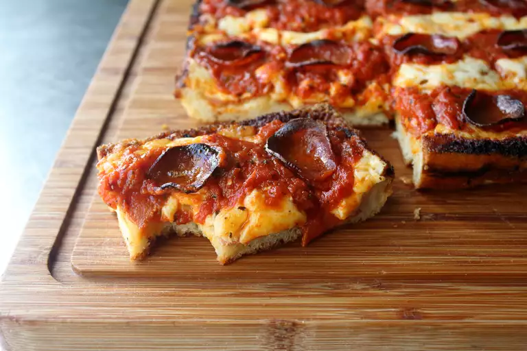

Detroit-Style Pizza

Description
Try this Detroit-style pizza recipe the next time you want a crunchy,
crispy, cheese-laden slice! Detroit-style pizza is often referred to as a deep-dish pizza,
but I don't think that accurately captures the essence of this crispy,
crusty, crazy-good pizza.
Ingredients
- pizza dough
- 1 (24 ounce) jar marinara sauce
- 2 teaspoons dried oregano
- 1 teaspoon red pepper flakes
- 1 teaspoon garlic powder
- 8 ounces shredded Monterey Jack cheese
- 24 ounces shredded mild Cheddar cheese
- 1 (8 ounce) package thick pepperoni slices
Steps
-
Bring marinara sauce, oregano, red pepper flakes,
and garlic powder to a simmer in a saucepan over medium-low heat.
Simmer for 15 minutes.
-
Preheat the oven to 525 degrees F (274 degrees C).
Combine Monterey Jack and Cheddar cheese into bowl. Toss lightly to mix together.
-
Lay almost all pepperoni slices onto dough.
Scatter cheese evenly over top, making sure to fully cover
all the edges where dough meets the pan.
- Ladle sauce on top in three long strips. Arrange remaining pepperoni slices over top.
-
Bake in the preheated oven until pizza is a bit darker than golden brown,
about 15 minutes. Let cool for 5 minutes.
-
Very carefully slide pizza onto a cutting board. Slice into rectangular pieces.
Home